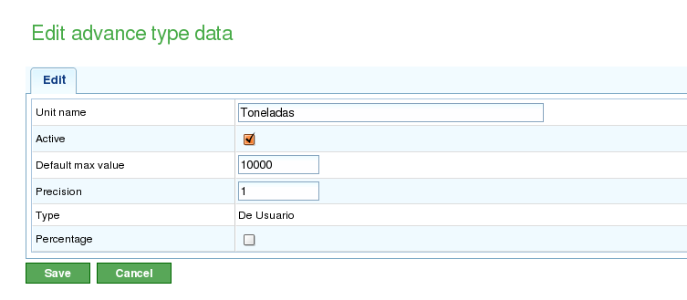
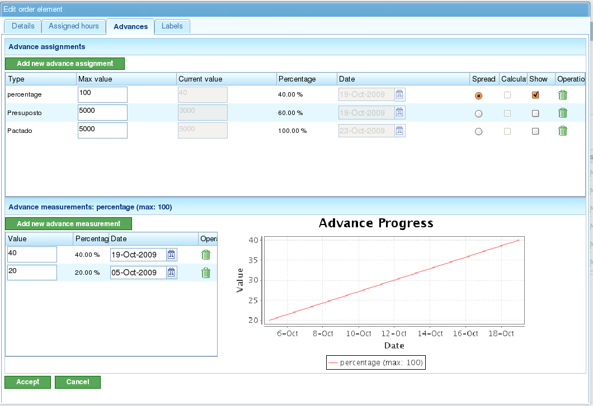

Postęp
Contents
Postęp projektu wskazuje, w jakim stopniu szacowany czas ukończenia projektu jest dotrzymywany. Postęp zadania wskazuje, w jakim stopniu zadanie jest realizowane zgodnie z szacowanym ukończeniem.
Ogólnie rzecz biorąc, postęp nie może być mierzony automatycznie. Pracownik z doświadczeniem lub lista kontrolna musi określić stopień ukończenia zadania lub projektu.
Ważne jest, aby zauważyć różnicę między godzinami przypisanymi do zadania lub projektu a postępem tego zadania lub projektu. Chociaż liczba wykorzystanych godzin może być większa lub mniejsza niż oczekiwano, projekt może być przed lub za szacowanym ukończeniem w monitorowanym dniu. Z tych dwóch pomiarów mogą wyniknąć różne sytuacje:
- Mniej godzin zużytych niż oczekiwano, ale projekt jest opóźniony: Postęp jest niższy niż szacowany na monitorowany dzień.
- Mniej godzin zużytych niż oczekiwano i projekt jest przed harmonogramem: Postęp jest wyższy niż szacowany na monitorowany dzień.
- Więcej godzin zużytych niż oczekiwano i projekt jest opóźniony: Postęp jest niższy niż szacowany na monitorowany dzień.
- Więcej godzin zużytych niż oczekiwano, ale projekt jest przed harmonogramem: Postęp jest wyższy niż szacowany na monitorowany dzień.
Widok planowania umożliwia porównanie tych sytuacji przy użyciu informacji o osiągniętym postępie i wykorzystanych godzinach. W tym rozdziale wyjaśniono, jak wprowadzać informacje w celu monitorowania postępu.
Filozofia monitorowania postępu opiera się na tym, że użytkownicy definiują poziom, na którym chcą monitorować swoje projekty. Na przykład jeśli użytkownicy chcą monitorować zamówienia, muszą wprowadzać informacje tylko dla elementów poziomu 1. Jeśli chcą dokładniejszego monitorowania na poziomie zadania, muszą wprowadzać informacje o postępie na niższych poziomach. System następnie agreguje dane w górę przez hierarchię.
Zarządzanie Typami Postępu
Firmy mają różnorodne potrzeby w zakresie monitorowania postępu projektu, w szczególności zaangażowanych zadań. Dlatego system zawiera "typy postępu." Użytkownicy mogą definiować różne typy postępu do mierzenia postępu zadania. Na przykład zadanie może być mierzone jako procent, ale ten procent może być również przeliczony na postęp w tonach na podstawie umowy z klientem.
Typ postępu ma nazwę, wartość maksymalną i wartość precyzji:
- Nazwa: Opisowa nazwa, którą użytkownicy rozpoznają podczas wybierania typu postępu. Ta nazwa powinna wyraźnie wskazywać, jaki rodzaj postępu jest mierzony.
- Wartość maksymalna: Maksymalna wartość, jaka może być ustalona dla zadania lub projektu jako całkowita miara postępu. Na przykład jeśli pracujesz z tonami, a normalne maksimum wynosi 4000 ton i żadne zadanie nigdy nie będzie wymagać więcej niż 4000 ton jakiegokolwiek materiału, to 4000 byłoby wartością maksymalną.
- Wartość precyzji: Dozwolona wartość przyrostu dla typu postępu. Na przykład jeśli postęp w tonach ma być mierzony w liczbach całkowitych, wartość precyzji wynosi 1. Od tego momentu tylko liczby całkowite mogą być wprowadzane jako miary postępu (np. 1, 2, 300).
System ma dwa domyślne typy postępu:
- Procent: Ogólny typ postępu, który mierzy postęp projektu lub zadania na podstawie szacowanego procentu ukończenia. Na przykład zadanie jest ukończone w 30% z 100% szacowanych na konkretny dzień.
- Jednostki: Ogólny typ postępu, który mierzy postęp w jednostkach bez określania typu jednostki. Na przykład zadanie obejmuje tworzenie 3000 jednostek, a postęp wynosi 500 jednostek z łącznej liczby 3000.

Administracja typami postępu
Użytkownicy mogą tworzyć nowe typy postępu w następujący sposób:
- Przejdź do sekcji "Administracja".
- Kliknij opcję "Zarządzaj typami postępu" w menu drugiego poziomu.
- System wyświetli listę istniejących typów postępu.
- Dla każdego typu postępu użytkownicy mogą:
- Edytować
- Usuwać
- Użytkownicy mogą następnie utworzyć nowy typ postępu.
- Podczas edytowania lub tworzenia typu postępu system wyświetla formularz z następującymi informacjami:
- Nazwa typu postępu.
- Maksymalna dozwolona wartość dla typu postępu.
- Wartość precyzji dla typu postępu.
Wprowadzanie Postępu na Podstawie Typu
Postęp jest wprowadzany dla elementów zamówień, ale może być również wprowadzany za pomocą skrótu z zadań planowania. Użytkownicy są odpowiedzialni za decydowanie, który typ postępu należy powiązać z każdym elementem zamówienia.
Użytkownicy mogą wprowadzić jeden domyślny typ postępu dla całego zamówienia.
Przed pomiarem postępu użytkownicy muszą powiązać wybrany typ postępu z zamówieniem. Na przykład mogą wybrać postęp procentowy do mierzenia postępu całego zadania lub uzgodniony wskaźnik postępu, jeśli w przyszłości będą wprowadzane pomiary postępu uzgodnione z klientem.

Ekran wprowadzania postępu z graficzną wizualizacją
Aby wprowadzać pomiary postępu:
- Wybierz typ postępu, do którego zostanie dodany postęp. * Jeśli nie istnieje żaden typ postępu, należy utworzyć nowy.
- W formularzu, który pojawia się pod polami "Wartość" i "Data", wprowadź wartość bezwzględną pomiaru i datę pomiaru.
- System automatycznie przechowuje wprowadzone dane.
Porównywanie Postępu dla Elementu Zamówienia
Użytkownicy mogą graficznie porównać postęp osiągnięty w zamówieniach z wykonanymi pomiarami. Wszystkie typy postępu mają kolumnę z przyciskiem wyboru ("Pokaż"). Gdy ten przycisk jest zaznaczony, dla elementu zamówienia jest wyświetlany wykres postępu wykonanych pomiarów.

Porównanie kilku typów postępu